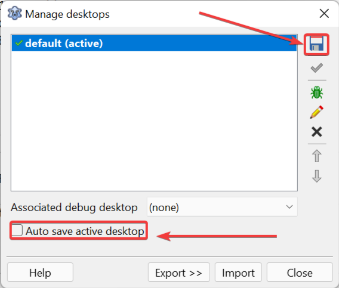

Desktop neste contexto é a visão ou perspectiva do usuário usando a IDE, isto é, a forma como ele “docou” os painéis, posição das janelas e redimensionamentos - basicamente o aspecto visual. Pois é, isso chama-se Desktop. O Lazarus salva seu desktop toda vez que você fechar a IDE, daí na próxima vez que for carregá-lo ele aparecerá exatamente como deixou antes. A princípio parece bom, mas se fizer “caquinha” na IDE, será “caquinha” que terá na próxima execução. Por isso recomendo desligar o autosalvamento de desktop assim que puder.
Para desligar, vá em Tools->Desktop(Ferramentas->Área de Trabalho):

Clique “Save active desktop as” (Salvar o desktop ativo como) e mantenha o mesmo nome do perfil, isto é, “default”. Depois disso, nunca salve outro perfil por cima do default, ele será seu quarto do pânico para usá-lo quando as coisas derem errado.
E então desmarque a opção “Auto save active desktop” para desativar o auto salvamento, esta é uma recomendação pessoal.
Quando fizer ajustes na IDE deixando-a pronta para uso levando em consideração o contexto do seu trabalho, então é hora de salvar seu desktop com um nome diferente e evitar sempre que possivel sobrepor desktop anteriores a menos que não use-os mais.
Ainda com dificuldade em entender? Então assista ao vídeo: